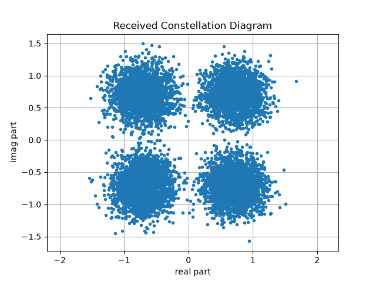

First Simulation#
A communication system is a series of operations applied to a signal, one after the other: generate symbols, map them onto a constellation, send them through a channel, decide what was sent. You can write that down with plain NumPy in twenty lines, and this page starts by doing exactly that – because those twenty lines are what the library has to earn its place against.
It then writes the same simulation with comnumpy, gets the same answer, and shows what the second version has that the first does not.
What you’ll learn:
What a one-shot AWGN simulation is, written out by hand.
Which parts of it are conventions you have to keep consistent yourself.
How to assemble the same thing as a
Sequentialchain, and how to look inside it with a tap.What a
Constellationknows about itself, and why that matters more than it looks.
Prerequisites#
numpy
scipy
matplotlib
comnumpy
"""One AWGN simulation, written twice: by hand, then as a chain.
Run from this directory: it writes the figures and diagrams of the
getting-started page into ../../docs/getting_started/.
"""
import matplotlib.pyplot as plt
import numpy as np
from scipy.stats import norm
from comnumpy import style
from comnumpy.core import Sequential, plot_iq
from comnumpy.core.channels import AWGN
from comnumpy.core.generators import SymbolGenerator
from comnumpy.core.mappers import SymbolDemapper, SymbolMapper
from comnumpy.core.metrics import compute_ser
from comnumpy.core.utils import Constellation
style.use()
img_dir = "../../docs/getting_started/img/"
mermaid_dir = "../../docs/getting_started/mermaid/"
N = 10000 # number of symbols
snr_dB = 10 # signal-to-noise ratio per symbol, in dB
By Hand#
Nothing in this section needs a library. A 4-QAM alphabet is four points of the complex plane; symbols are indices into it; the channel adds a complex Gaussian; the receiver keeps the nearest point.
# --- 1. by hand, in plain numpy ---------------------------------------
# A 4-QAM alphabet on the odd-integer grid, rescaled to unit average
# energy. That rescaling is a *convention*, and everything below depends
# on it being the same one the noise variance assumes.
rng = np.random.default_rng(0)
axis = np.array([-1.0, +1.0])
raw = (axis[:, None] + 1j * axis[None, :]).ravel()
alphabet = raw / np.sqrt(np.mean(np.abs(raw) ** 2))
symbols = rng.integers(0, alphabet.size, N)
sent = alphabet[symbols]
# Es = 1 after the rescaling, so sigma^2 = 10^(-SNR/10); the noise power
# is split evenly between the real and the imaginary part.
sigma2 = 10 ** (-snr_dB / 10)
noise = np.sqrt(sigma2 / 2) * (rng.standard_normal(N)
+ 1j * rng.standard_normal(N))
received = sent + noise
# hard decision: the nearest constellation point
distance = np.abs(received[:, None] - alphabet[None, :])
detected = np.argmin(distance, axis=1)
ser_by_hand = np.mean(detected != symbols)
That works, and it is worth being able to write. But look at what had to be kept consistent, by you, across those twenty lines:
The normalization. The alphabet was rescaled to unit average energy. That is a convention, and the noise variance on the next line assumes it. Change one without the other and the SNR silently means something else.
The SNR convention.
sigma2 = 10 ** (-snr_dB / 10)is the symbol SNR. The closed form below is quoted against \(E_b/N_0\), so a division by \(k\) appears – and forgetting it moves the theoretical curve by \(10\log_{10} k\) dB, which on a 16-QAM is 6 dB of a lie that still looks like a plot.The decision rule, written out again each time it is needed.
The modulation, described twice. The alphabet says 4-QAM once; the closed form says it again, with the order appearing three more times inside a formula that has to have been got right.
# modulation has to be described a second time -- the square-QAM error
# probability, with the order written into it three times
order, bits = 4, 2
snr_per_bit = 10 ** (snr_dB / 10) / bits
component = 2 * (1 - 1 / np.sqrt(order)) * norm.sf(
np.sqrt(3 * bits * snr_per_bit / (order - 1)))
ser_theo_by_hand = 1 - (1 - component) ** 2
print(f"by hand : SER = {ser_by_hand:.4f}, theory = {ser_theo_by_hand:.4f}")
None of this is hard. All of it is a place where a study drifts as it grows: change the modulation and four independent lines have to change together, with nothing checking that they did.
The Same Thing, as a Chain#
# --- 2. the same thing, as a chain ------------------------------------
# The constellation is one object: it holds the alphabet, its order and
# its own closed form, so the modulation is named once.
constellation = Constellation("QAM", 4)
chain = Sequential([
SymbolGenerator(constellation.order, name="tx"),
SymbolMapper(constellation),
AWGN(snr_dB=snr_dB, name="awgn"),
SymbolDemapper(constellation),
], taps=["tx", "awgn"])
# seeded, so the number this page quotes is the number you get (D6)
chain.seed(0)
y = chain(N)
ser = compute_ser(chain.tap("tx"), y)
# AWGN(snr_dB=) is a symbol SNR and the closed form is quoted against
# Eb/N0: per="symbol" makes the conversion, which is 10log10(k) dB.
ser_theo = constellation.metrics(snr_dB, per="symbol")["ser"]
print(f"chain : SER = {ser:.4f}, theory = {ser_theo:.4f}")
flowchart LR
tx["SymbolGenerator"]
symbol_mapper["SymbolMapper"]
awgn["AWGN"]
symbol_demapper["SymbolDemapper"]
tx --> symbol_mapper
symbol_mapper --> awgn
awgn --> symbol_demapper
classDef tapped stroke-dasharray: 4 2
class tx,awgn tapped
The diagram is not drawn by hand: it is what the chain says about itself,
chain.to_mermaid(), so the block names are the ones the code uses and a
dashed outline marks a tapped block.
Four processors, and each one is worth a sentence – these four come back in every tutorial that follows:
SymbolGeneratorDraws random integers in \([0, M-1]\), one per symbol to transmit.SymbolMapperMaps each integer onto a point of the constellation.AWGNAdds white Gaussian noise at the requested SNR.SymbolDemapperDecides, by minimum distance, which symbol was sent.
Three things in that block deserve a second look.
The modulation is named once.
Constellation holds the alphabet the mapper
needs, the order the generator needs, and the closed form the comparison
needs. The theory cannot describe a different modulation from the one the
chain transmits, because there is only one object to change.
The SNR conversion moved into the object.
constellation.metrics(snr_dB, per="symbol") says which SNR is being
passed, and the factor \(k\) is applied where \(k\) is known rather
than in the caller’s head.
Nothing in the chain records, displays or measures. A chain contains
communication blocks only. To see a signal in the middle of it, give the
block a name and declare that name as a tap – taps=["tx", "awgn"]
above – and the chain keeps what that block produced. One habit to take
right away: run the chain first, read the tap after. A tap holds the last
run, so reading it before calling the chain raises rather than returning
stale data.
seed fixes every random draw in the chain, so the numbers below are the
numbers you get:
by hand : SER = 0.0020, theory = 0.0016
chain : SER = 0.0017, theory = 0.0016
The two simulations disagree, and that is the measurement rather than the
model: an error rate estimated from \(N\) symbols has a standard
deviation of roughly \(\sqrt{P_e/N}\), so with 10 000 symbols and
\(P_e \approx 1.6 \times 10^{-3}\) a spread of this size is expected.
The two draw different noise, so they land on either side of the closed form.
Increasing N narrows it – and how many symbols a claim needs is the
subject of the next tutorial.
What the Object Knows#
The difference from a library of functions is not that the code is shorter. It is that the objects can be asked. A constellation answers about itself:
# --- 3. what the object knows about itself ----------------------------
print("\nconstellation.info()")
for key, value in constellation.info().items():
print(f" {key:16s} {value}")
constellation.info()
family QAM
order 4
labelling gray
bits_per_symbol 2
energy 1.0
min_distance 1.414213562373095
papr_dB 0.0
Every one of those was implicit in the by-hand version. energy is the
normalization the noise variance depends on; bits_per_symbol is the
\(k\) of the SNR conversion; min_distance is what sets the error rate
at high SNR; papr_dB is 0 here because every 4-QAM point carries the same
power, and it stops being 0 as soon as the constellation has several radii –
which is what PAPR in OFDM Communication is about.
It also draws itself, next to what the channel did to it:
# --- 4. the figures ---------------------------------------------------
fig, axes = plt.subplots(nrows=1, ncols=2, figsize=(9, 4.2))
constellation.plot(ax=axes[0])
plot_iq(chain.tap("awgn"), title=f"received at {snr_dB} dB", ax=axes[1])
plt.tight_layout()
plt.savefig(f"{img_dir}/first_simulation_fig1.png")
with open(f"{mermaid_dir}/first_simulation.mmd", "w") as stream:
stream.write(chain.to_mermaid())
{kind=link}

The chain answers the same way:
tap() for a signal inside it,
seed for reproducibility,
set_params() to reconfigure a named
block after construction, elapsed_ for the time the last pass took, and
sweep() to run the whole thing over a range of one
parameter. None of those exist for a script of loose arrays – not because
they would be hard to write, but because there is nothing to attach them to.
Conclusion#
You have written the simulation twice, and the second version is not merely shorter: the conventions the first one left to you – the normalization, the SNR convention, the decision rule, the modulation named twice – are held by objects that cannot contradict themselves.
That is the whole vocabulary the rest of the series uses.
The natural next step is Monte Carlo Simulation over AWGN Channel, which asks the question this page left open: one run gives one number at one SNR, so how do you obtain a curve – and how many symbols does each of its points deserve?